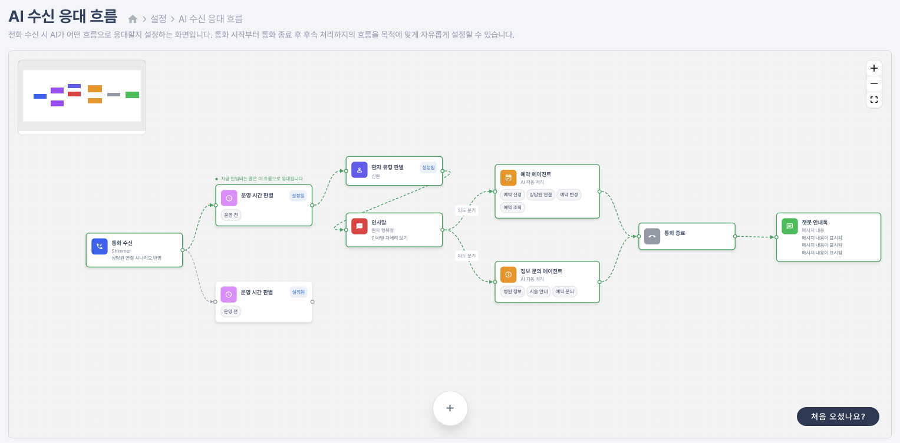
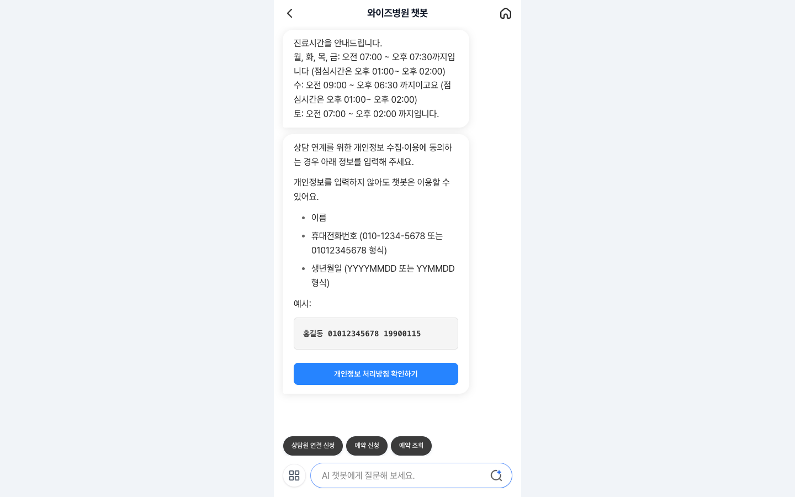
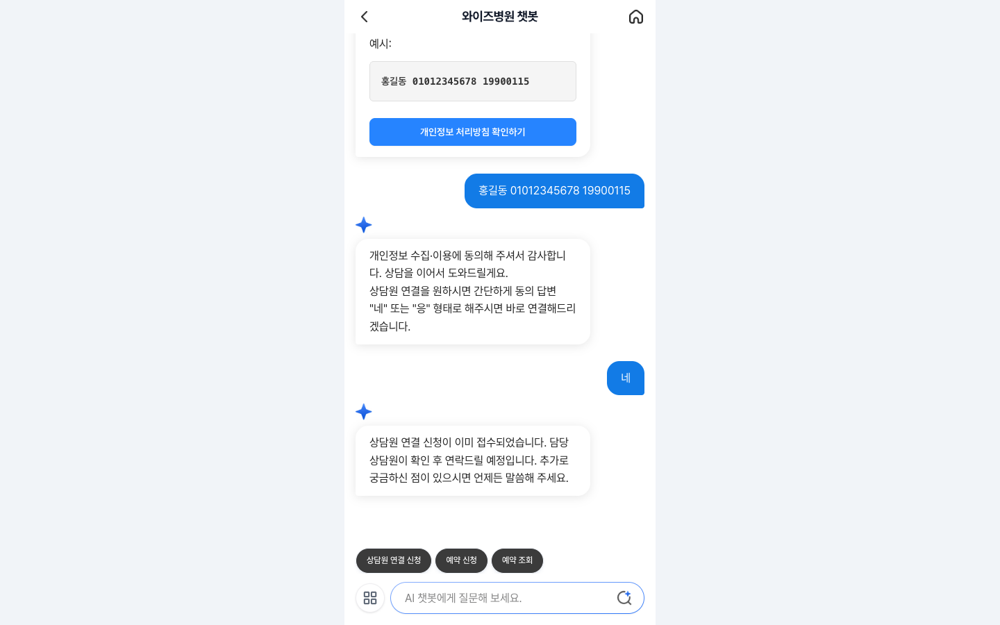
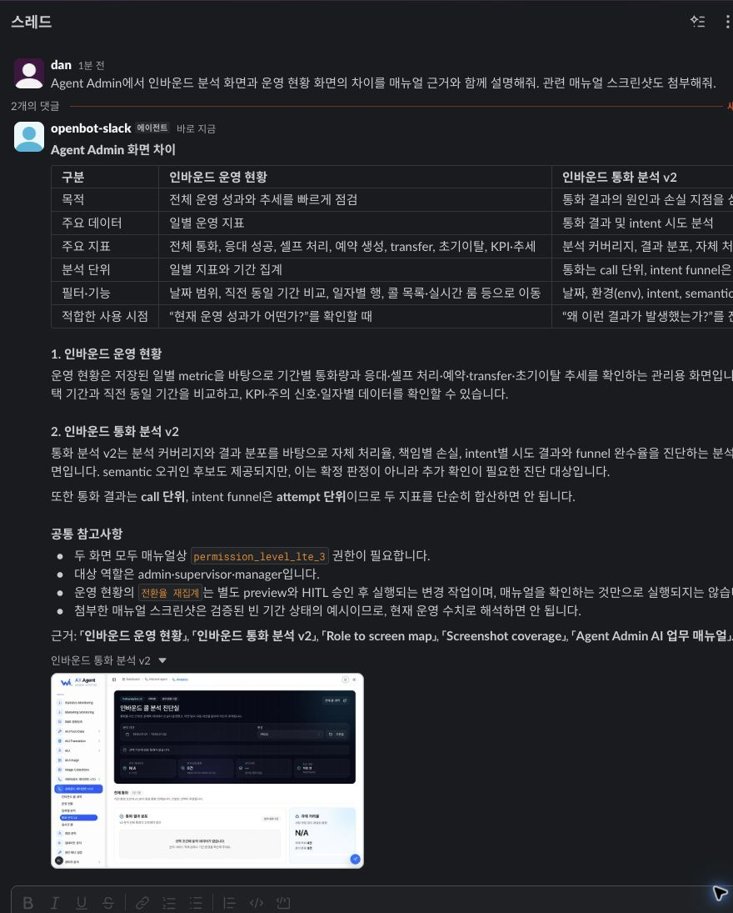

아웃바운드 Voice AI
예약 확인·안내 전화를 실제 전화망에서 자동 실행
병원의 전화 업무를 AI가 실제로 처리하게 만들고, 그 시스템을 설계부터 운영까지 책임집니다. 같은 방식을 통화 분석과 사내 업무지원 AI로 넓혀 왔습니다.
Voice AI만 개발한 엔지니어 → 운영 업무를 시스템으로 옮기는 AI Product Engineer
무엇을 쓸지 고르기 전에, 누가 무엇을 반복하고 어떤 예외가 운영을 멈추게 하는지부터 정의합니다.
프론트엔드·백엔드·인프라 경험 위에서 Multi-Agent, 실시간 음성 처리, 검색, LLM 평가를 하나의 제품 경계로 연결해 왔습니다.
사용자 접점에서 데이터·인프라까지 연결하고, 운영 결과를 다시 설계로 되돌립니다.
전화 한 통의 자동화에서 시작해 병원별 정책, 복합 상담, 운영 지표, 사내 지식 조회로 범위를 넓혔습니다. 대상은 달라졌지만 매번 사람의 반복 판단을 구조화된 시스템으로 옮겼습니다.
예약 확인·안내 전화를 실제 전화망에서 자동 실행
병원별 정책과 상담원 연결을 설정 기반 흐름으로 전환
검색·개인정보 수집·질문 복귀가 섞인 상담을 상태로 관리
수천 건의 결과와 품질을 재구성해 운영 개선 근거로 변환
5개 사내 시스템의 지식과 조회 업무를 Web·Slack으로 통합
다섯 Chapter는 각각 하나의 질문에 답하고, 그 답을 코드와 운영으로 확인 가능한 설계 증거로 뒷받침합니다. 행을 누르면 해당 Chapter로 이동합니다.
사람이 반복하던 예약 확인·안내 전화를 병원별 정책과 예외를 유지한 채 실제 전화망에서 자동화해야 했습니다. 발신 수명주기부터 예약 신청·상담원 연결·분석까지 하나의 제품으로 묶었습니다.
Agent는 직접 전화를 걸지 않습니다. voxBridge가 Room·SIP 발신과 연결 전 실패를 소유하고, Agent는 SIP 상태를 관찰하며 대화·녹음·분석 payload만 책임집니다.
SIP 생성과 Room 정리 소유권을 한 곳에 두어 두 주체가 같은 Room을 정리하는 race를 없앴습니다.
Participant listener를 먼저 등록한 뒤 현재 상태를 다시 읽어, 이미 지나간 이벤트와의 관측 공백을 막습니다.
SIP active 이후에 녹음과 AMD를 시작해 연결되지 않은 통화의 잘못된 후처리를 차단합니다.
병원마다 Agent를 새로 만들지 않습니다. 설정이 통화의 큰 흐름을 결정하고, 하나의 SingleAgent가 Context를 유지한 채 되돌리기 어려운 구간만 Task에 위임합니다.
call_additional_guidance에 목적·사실 Context·긍정/부정 행동·금지 Tool을 넣어, 같은 응답도 통화 목적에 맞게 처리합니다.
예약을 중단하고 병원 정보를 물었다가 다시 돌아와도 같은 세션과 정책 Context를 유지합니다.
조회 · 신청 · 변경 요청 · 취소 요청
생년월일 · 진료과 · 일정 · Transfer
시작 시 기관별 활성 FAQ를 주입
auto · transfer · leave_memo
booking_agent와 info_agent는 별도 Agent 인스턴스가 아니라 설정 호환성을 위한 논리 노드 ID입니다.
LLM은 대화를 진행하지만 후보의 존재·허용 범위·최종 동의 일치는 코드와 AgentTask가 검증합니다. 통화에서 끝나는 것은 예약 확정이 아니라 신청 접수입니다.
단일 Speech-to-Speech 모델보다, 업무별 Tool 통제와 transcript 감사·지연 원인 분리가 중요한 환경을 선택했습니다.
Turn 확정 전 LLM·TTS 일부를 겹쳐 체감 대기를 줄입니다.
Primary 장애가 통화 전체 실패로 번지지 않게 분리합니다.
잘못된 순간에 말하거나 연결하거나 종료하지 않도록 상태 경계를 코드로 고정했습니다. 아래 셋은 모두 운영 중 실제로 발생한 문제에서 나왔습니다.
| 조건 / 상황 | 방어 메커니즘 | 코드가 강제하는 것 |
|---|---|---|
| AMD 판정 전사람인지 기계인지 모름 | FakeAgent 무발화 Agent |
SIP active 뒤 LiveKit AMD를 실행하고, human 또는 uncertain 판정에서만 SingleAgent를 활성화합니다. AMD 중 시작된 turn이 Agent 전환 뒤 완료되는 race를 막기 위해 FakeAgent와 GreetingDtmfTask 양쪽에서 StopResponse를 강제하고 회귀 테스트로 고정했습니다. |
| 사용자 무응답듣고 있는지 알 수 없음 | user_state_changed 2회 확인 후 종료 |
사용자 away 상태를 감지해 10초 간격으로 2회 확인하고 미응답 시 종료합니다. 단 AMD·DTMF Task·Warm Transfer 구간에서는 전역 무응답 처리를 억제해, 정상적인 대기 시간을 이탈로 오판하지 않습니다. |
| 상담원 연결 경합인·아웃바운드가 같은 자원 요청 | 공용 Redis FIFO trunk 점유권 |
병원별 Redis ZSET FIFO와 connected occupancy lock으로 직렬화하고, AI 브리핑 후 상담원 DTMF 수락을 받습니다. 대기 재확인·재시도·수신자 이탈을 상태로 기록하고, 번호 없음이나 연결 실패는 메모 접수로 fallback합니다. |
실시간 통화는 종료 이벤트와 원본 증거만 Kafka로 전달합니다. 분석 Consumer가 결과를 재구성하므로 분석 장애가 통화에 영향을 주지 않습니다.
BOOKING_CREATE · INFO_LOOKUP · WARM_TRANSFER_CALL · LEAVE_MESSAGE · CALL_TERMINATION의 상태 이력으로 완료·이탈·timeout을 재현합니다.
trustcall은 거절·긍정·불명확 응답만 보완합니다. LLM이 구조화 이벤트가 이미 증명한 업무 결과를 다시 쓰지 않도록 역할을 분리했습니다.
환경은 병원 요구에 따라 달라도, 실시간 통화를 지키는 여섯 가지 계약은 동일하게 유지했습니다.
| 배포 경로 | 운영 구성 |
|---|---|
| Tokyo AWS ECS Fargate | 시간대·부하 기반 확장 · DEV/QA/PROD · ARM64 · Multi-AZ · 프라이빗 서브넷 · 최대 20 Task |
| Korea Kubernetes | voxBridge와 같은 운영 경계 · dev/qa/prod cluster · ECR 환경 태그 · rollout status 기반 배포 확인 |
통화 녹음
분석 격리
Transfer 상태
환자가 먼저 전화하는 환경에서는 운영시간·DTMF·예약·병원 정보·상담원 연결이 한 통화에 섞입니다. 병원별 차이를 코드 분기가 아니라 검증 가능한 정책 데이터로 바꿔야 했습니다.
SingleAgent가 통화 전체 Context를 유지하고, flow_config가 운영시간·DTMF·업무 진입·연결·종료를 코드 배포 없이 조합합니다.
시작 시 압축된 병원 근거를 주입하고, 조회에 실패하면 아는 척하지 않는 no-knowledge 상태로 통화를 계속합니다.
booking_agent와 info_agent는 별도 Agent 인스턴스가 아니라 SingleAgent 안의 설정 호환 ID입니다.

환자의 자연어 선호를 병원 기준정보와 실시간 일정의 교차점에서 검증해, 정확한 후보 하나만 동의 대상으로 만듭니다. 대화는 LLM이, 사실과 상태는 코드가 책임집니다.
한 건의 SIP 연결보다 어려운 것은 여러 환자가 같은 상담원과 trunk를 요청하는 순간입니다. 인바운드·아웃바운드 호출을 하나의 FIFO와 점유권으로 직렬화했습니다.
병원별 활성 FIFO 순서와 rank 0 점유권
상태 · 시각 · 시도 횟수 · 브리핑 · 통화 방향
PII 없이 상태 변경만 알리고 snapshot을 다시 읽게 함
병원 상담은 FAQ 검색만으로 끝나지 않습니다. 질문 중 개인정보 수집·예약·상담원 연결 절차가 끼어들면 사용자가 같은 맥락을 반복해야 했고, 검색 결과와 상담 상태를 하나의 Thread에서 관리할 기반이 필요했습니다.
현재 Graph는 내가 설계한 초기 상담 노드를 team wrapper로 감싸고 current_node legacy 값을 유지합니다. 기반을 버리지 않고 통제 계층을 추가한 것이 구조적 확장성의 증거입니다.
Gateway · Thread
State · Run
Persistence
위험도별 controller 경유
Kakao 버튼 · 이미지 · 다국어
진료시간 질문과 상담원 연결이 한 문장에 섞인 요청을 실제 개발 서비스에서 검증했습니다. 먼저 답할 수 있는 정보는 제공하고, 연결에 필요한 정보만 수집한 뒤 같은 Thread에서 신청을 완료합니다.


통화가 하루 수천 건씩 쌓이자 사람이 녹취를 다시 듣고 결과를 판정하는 일도 반복 업무가 됐습니다. 실시간 통화와 분석 부하를 분리하면서도 한 통화의 업무 결과와 품질을 재구성해야 했습니다.
운영 현황은 기간별 성과와 추세를 빠르게 확인하고, 통화 분석 v2는 결과 분포와 intent attempt 단위 funnel을 내려가며 손실 지점을 진단합니다.


AIU 제품과 통화 운영 정보를 5개 시스템·매뉴얼·화면에서 찾아야 했습니다. 동료의 반복 조회를 줄이되, 지식 접근·DB 조회·브라우저 실행 권한을 Agent의 추론과 분리해야 했습니다.
같은 자연어라도 필요한 근거와 실행 경계는 다릅니다. Supervisor가 제품·데이터·화면 요청을 구분하고 해당 specialist에 완전한 작업 설명을 전달합니다.
| 업무 도메인 | 동료가 실제로 던지는 질문 | 필요한 근거와 경계 |
|---|---|---|
| Inbound 받은 전화는 어떻게 끝났나 |
“어제 예약 전환율과 인사말 전 이탈을 비교해 줘.” | 저장 통화 지표는 SELECT-only 집계로, 통화 내용 확인은 비식별 bounded QA로만 접근합니다. |
| Outbound 발신 결과는 무엇이 달랐나 |
“이번 주 응답 여부와 예약 신청 전환을 병원별로 보여줘.” | 응답/무응답 filter와 명시적 기간 집계만 허용하고, raw payload는 결과에서 제외합니다. |
| Agent Admin 설정은 어디서 확인하나 |
“운영시간 설정 화면과 변경 전 확인 정책을 알려줘.” | 승인된 매뉴얼 문서와 catalog가 허용한 screenshot만 근거로 사용합니다. |
| HQ · SVC 운영 정책의 근거는 무엇인가 |
“이 캠페인 설정과 상담 이력 화면의 근거 문서를 보여줘.” | Policy·State Model 문서를 근거로 답하고, 현재 관찰과 문서 근거를 구분해 표시합니다. |
“운영 현황과 통화 분석 화면의 차이를 근거와 함께 설명해 달라”는 동일 질문을 Web과 Slack에서 실행했습니다. 두 채널 모두 같은 Agent Admin 지식과 승인된 매뉴얼 screenshot을 사용합니다.


Supervisor는 원본 source를 읽지 못합니다. 제품·데이터 경계는 각 specialist에 선언된 source path와 Tool로만 열립니다.
/knowledge/sources read deny4개 모두 stateless — Supervisor가 매번 완전한 작업 설명을 전달합니다.
호출권을 Web/Slack OpenBot으로 반환
active run + callback credential 확인
각 source는 별도의 snapshot·기본 접근 metadata·문서 수·entrypoint를 갖습니다. Catalog는 모델이 읽기 전에 manifest와 실제 파일을 대조합니다.
/knowledge는 write가 항상 deny자연어 질문이 데이터베이스에 닿기까지 네 개의 축소 관문을 지납니다. 각 관문에서 무엇이 제거되는지가 이 Tool의 계약입니다.
저장 통화 검색 · 자체 처리율 · 예약 전환 · 상담원 연결 · 일별 운영 metric
응답/무응답 filter · 통화 결과 · 예약 신청 전환 · 명시적 기간 집계
AIU Agent는 reasoning과 위임을 담당하지만 브라우저·plugin·surface Tool의 실행 주체가 아닙니다. OpenBot이 검증된 run, 사용자 surface와 실행 정책을 계속 소유합니다.
| 경계 | 계약 | 강제 방식 |
|---|---|---|
| Admission | OpenBot Run Assertion | AG-UI 요청에 run context와 aiu-agent Bot ID가 없으면 401로 거부합니다. |
| Execution | Tool Ownership | Surface Tool은 OpenBot UI로 호출권을 반환하고, deployment Tool은 active run과 callback credential을 확인한 뒤 OpenBot이 실행합니다. |
| Computer Use | Policy · HITL · Audit | 브라우저와 plugin 권한, secret 입력과 사람 승인은 OpenBot 정책 경계에 남깁니다. |
| Delivery | Short-lived Attachment | 매뉴얼 screenshot은 HMAC URL, 생성 이미지는 난수 URL로 대화 상태 밖에서 전달합니다. |
Voice AI, 통화 관측·평가, 사내 업무지원 Agent까지. 기술이 달라져도 반복 업무를 프로덕션 AI 시스템으로 바꾸는 방식은 같습니다.